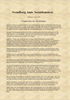

Dansk
Prøve med adgang til internettet
Du skal vælge en af disse opgaver:
1 På opdagelse i vores rødder
2 Det talte vi unge om i 2017
3 Zoo
4 Cold Hawaii
Du skal skrive den valgte opgaves nummer og titel på din besvarelse.
1 På opdagelse i vores rødder
2 Det talte vi unge om i 2017
3 Zoo
4 Cold Hawaii
Du skal skrive den valgte opgaves nummer og titel på din besvarelse.
Før du skriver
Til eleven
Til denne prøve i skriftlig fremstilling har du adgang til internettet.
Du må ikke kommunikere eller dele dine dokumenter med andre under prøven.
Nogle af opgaverne kræver, at du skal søge informationer på internettet til brug for din besvarelse. I andre opgaver er det en åben mulighed, hvor du kan søge fakta og inspiration.
Layoutet af din besvarelse indgår i vurderingen. Tænk derfor på, at du udover tekst kan inddrage fx billeder og andre grafiske virkemidler.
Hvis du i din besvarelse anvender informationer, citater, billeder eller andre grafiske virkemidler hentet fra internettet, skal du til sidst i besvarelsen angive de væsentlige kilder.
Din besvarelse vurderes på både indhold, sprog og form. Se vurderingskriterierne nedenfor.
God arbejdslyst!
Vurderingskriterier til eleven
Din skriftlige besvarelse bliver vurderet ud fra en helhedsvurdering af 3 dimensioner: indhold, sprog og form.
Der gives én karakter.
| Vurderingens 3 dimensioner | Vurderingskriterier | Forklaring |
| Tekstens indhold | Opgavens krav | I hvor høj grad opfylder din besvarelse opgavens krav til genre, teksttyper og indhold? |
| Genrebevidsthed | I hvor høj grad viser din besvarelse sikkerhed i skrivegenrens krav til teksttyper, indhold, sprog og form? | |
| Fylde og disponering | I hvor høj grad er din besvarelse fyldestgørende og hensigtsmæssigt disponeret? | |
| Søgning og brug af internettet | Hvis der i opgaven er stillet krav om, at du skal anvende internettet til at søge inspiration eller information, eller det i øvrigt er relevant, vurderes det, hvordan – og i hvor høj grad du kritisk har bearbejdet og anvendt dette i besvarelsen.
Desuden vurderes det, om de væsentligste kilder fremgår af besvarelsen. |
|
| Tekstens sprog | Sprog | I hvor høj grad er sproget i din besvarelse forståeligt, klart og varieret i både ordforråd og syntaks? |
| Retskrivning og tegnsætning | I hvor høj grad har du i din besvarelse anvendt korrekt stavning, og er din tegnsætning sikker? | |
| Tekstens form | Orden og layout | I hvor høj grad er din besvarelse layoutet i forhold til den genre, du skriver i, og har du udnyttet de layoutmæssige muligheder? |
1 På opdagelse i vores rødder
I en avis kunne man i 1903 læse om, hvordan en ældre kvinde på en uværdig måde blev ført til fattiggården.
Klik på ikonet, og læs uddraget af artiklen fra avisen Svendborg Amts Socialdemokrat 1903: Fattiggården som Alderdomshjem.
|  |
Klik herunder for at se et billede af den oprindelige artikel.
|
|
Du skal til en fætter-kusine-fest, hvor temaet er På opdagelse i vores rødder. Du skal holde en af festens taler.
Forestil dig, at den gamle kone i artiklen var din tiptipoldemor. Du tager udgangspunkt i hendes historie, når du skriver din tale til festen.
| Fattige på fattiggården ved Skellerup ca. 1880. Rokkene signalerer ønsket om arbejdsomhed. |
Kilde: museumsilkeborg.dk |
|
Skriv talen.
I din tale skal du blandt andet:
|
2 Det talte vi unge om i 2017
Når man kigger på et år, er der altid nogle begivenheder, som står stærkere end andre.
En lokal avis vil i slutningen af året bringe klummer fra tre generationer med bud på, hvad der særligt optog dem i 2017.
Du er udvalgt til at repræsentere ungdomsgenerationen.
|
Skriv en klumme med titlen: Det talte vi unge om i 2017
Som forberedelse til din klumme skal du søge informationer om begivenheder i 2017. I din klumme skal du:
|
Kilde: viunge.dk
3 Zoo
I de senere år har der været en voldsom debat om dyrevelfærd i zoologiske haver.
Klik på ikonet for at læse artiklen fra metroXpress den 18/9 2015: Hver femte dansker bliver trist af at gå i Zoo – her er grunden.
Kilde: odensezoo.dk
|
Skriv et debatindlæg om forholdene i zoologiske haver.
Som forberedelse til dit debatindlæg skal du læse artiklen. Desuden skal du søge information og inspiration om forholdene i zoologiske haver. I dit debatindlæg skal du:
Vælg selv, hvor dit debatindlæg skal bringes, og tilpas dit layout til det valgte medie. |
4 Cold Hawaii
Kilde: Klitmoller Surf Trip, May 2016. Katarzyna Pajzderska, Youtube.com
Den lille by Klitmøller, som ligger ud til Vesterhavet, tiltrækker hvert år surfere fra hele verden. Området kaldes Cold Hawaii, og hvert år arrangeres der her forskellige events og surfkonkurrencer.
Forestil dig, at du er journalistpraktikant og bliver bedt om at skrive en reportage fra eventen LAKOR Pibe Masters. Du følger en gruppe unge piger, der deltager i denne.
|
Skriv en reportage om surfernes forberedelser og oplevelser til en hjemmeside om friluftsliv.
Se videoen, og søg yderligere oplysninger om surfing ved Cold Hawaii. I din reportage skal der indgå:
|